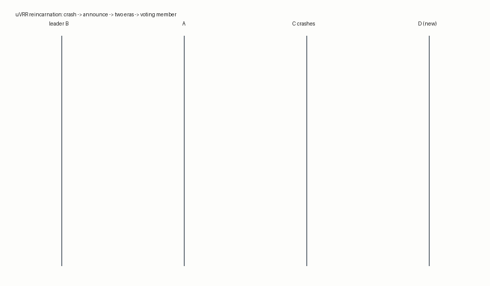
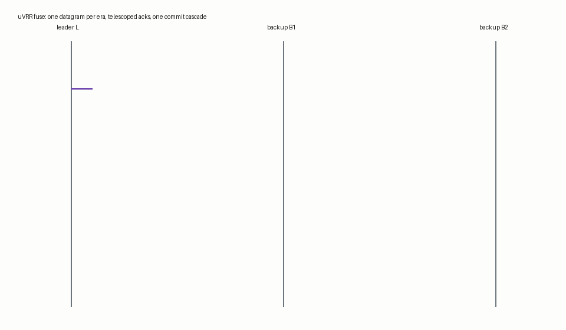

Google kept Chubby behind the moat. This one fits in your head: three nodes, two rules, one promise-counting theorem — and it survives the thing that kills every consensus system eventually: the restart.
Two of three must agree. Any two quorums overlap. That overlap is set arithmetic, and it is the only thing between you and a split brain.
But the arithmetic counts promises — and a promise is only worth something if the node that made it can be held to it.
2012: crash recovery with no disk on the critical path — the crashed node asks the cluster what it missed. A blinder.
2016: the counterexample. Two different commands committed at one slot, every rule followed by every node. The overlap existed on paper; one of the overlappers had forgotten making the promise.
You cannot recover a promise from a node that has forgotten making it.
A clean shutdown marks itself stopped. A start marks itself running. Two writes, both off the hot path. Steady state: zero disk writes.
Restart reads the markers. Clean stop: carry on, no recovery protocol at all. Any marker says running: this node is dead. It comes back in milliseconds — as a new identity — and the old identity can never vote again.

(1,1,1,–) → (1,1,0,0) → (1,1,–,1). Every consecutive pair of configurations has overlapping quorums; the boundary is carried by the leader's casting vote. The amnesiac's promise is never leaned on again.
The reborn node announces; the leader answers at once with the missed range and streams it everything. VRR-2012 §4.1 step 6 already rides commits on the prepares — the witness channel was built in 2012 and never used for this.
Promotion finds a caught-up node. Useful in as low as one round trip.

The batch's phase-2 messages share one header; the acceptor checks it once and explodes the envelope. One FuseOk is one atomic vote; the first slot's quorum telescopes the rest. Six eras, six round trips — one per era, as fast as the pipeline allows.
24 modules, 450 declarations, standard axioms only. Turner's Lemma 2 mechanised; amnesia unreachable; telescoping proved with its negative control. Seven of seven injected faults killed by the kernel; an independent solver re-proved the spine.
Read it line by line, in English, in the lab book.